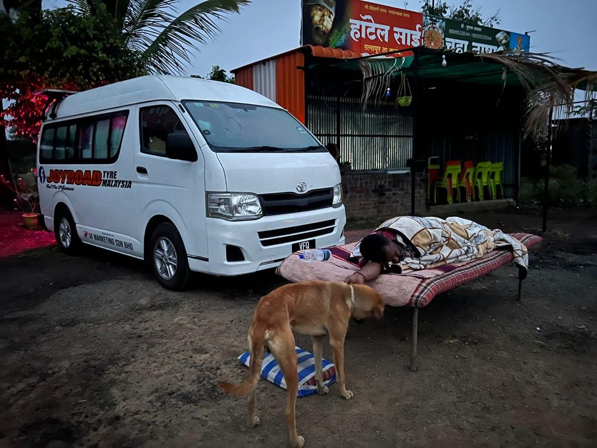

Real Story · 中文
那几天，我正在从 Kerala 疯狂赶去 Agra。
21/11/2023 开始，我从 Kerala 往 Taj Mahal 的方向赶路。 因为我要在 25/11/2023 或更早到达 Agra，赶上那一晚的 full moon viewing。
那几天几乎每天都开超过 400 km。路很长，人很累，身体已经不是普通疲惫， 而是那种只想找到一个安全地方停下来、洗一下、然后立刻睡着的状态。
23/11/2023 傍晚大概 7 点，我经过一间餐厅。 餐厅前面有一个比较宽阔的停车空间，于是我进去问，能不能让我 overnight 停在那里。
一开始，老板有点犹豫。他说店大概 12 点关门以后，就没有人在那里了。 对一个 solo woman traveller 来说，这句话其实很现实。 停得下车，不代表那一晚就真的安全。
后来，有一位会一点英文的顾客帮我沟通。 老板才同意让我把 Toyotaki 停在树下。
我在 campervan 里面很快洗了一个澡。 Toyotaki 里面有 shower room 和 toilet，所以那一晚我不用再找别的地方。 晚上大概 9 点，我就睡了。
外面其实还有很多顾客对我的 campervan 很好奇。 我听得到一些声音，也知道外面有人在看。 可是我真的太累了，只能很快睡着。
半夜的时候，我听到一些 weird noise。 但因为太累，我没有起来查看，也没有力气害怕。 我只是继续睡。
第二天早上，大概 7 点，我醒来，打开眼睛看到眼前这个画面： 有人把一张 bamboo bed 拉出来，睡在 Toyotaki 前面。
后来我才明白，应该是餐厅老板叫员工睡在那里， 不是为了打扰我，而是为了保护我。
他没有跟我讲很多话。 但那张竹床已经替他说完了。
English Memory Summary
The protection happened while I was asleep.
From 21/11/2023, Tuzi was rushing from Kerala to Agra to reach Taj Mahal in time for the full moon viewing. For several days, she drove more than 400 km a day.
On 23/11/2023, around 7 PM, exhausted from the long drive, she passed a roadside restaurant with a spacious front parking area. She asked for permission to stay overnight.
At first, the owner hesitated because the shop would close after midnight and no one would remain there. With the help of a customer who could speak a little English, he eventually agreed to let her park under the tree.
Tuzi took a quick shower inside Toyotaki and went to sleep around 9 PM. She heard some strange noises in the middle of the night, but she was too exhausted to wake up properly.
The next morning, around 7 AM, she woke up and saw a bamboo bed placed in front of her campervan. Apparently, the restaurant owner had asked a staff member to sleep there through the night to protect her.
The kindness had happened quietly, while she was asleep.
Heart Statement
有些善意不是用语言说出来的。
它是在你睡着以后，才发生的。
那一晚，我太累了。 累到听见半夜有声音，也没有力气害怕。 我只是继续睡。
第二天早上醒来，才发现有人把竹床拉到 Toyotaki 前面， 在外面睡了一夜。
他没有跟我讲很多话。 可是那张竹床已经替他说完了。
Some kindness is not spoken. It happens after you fall asleep.